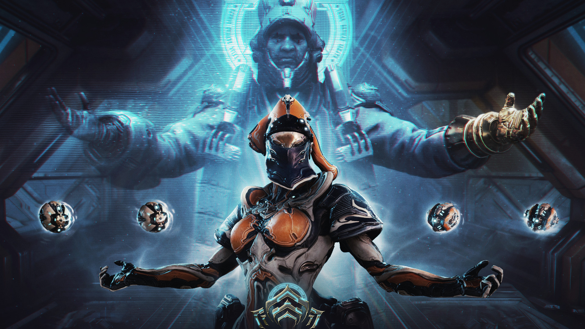
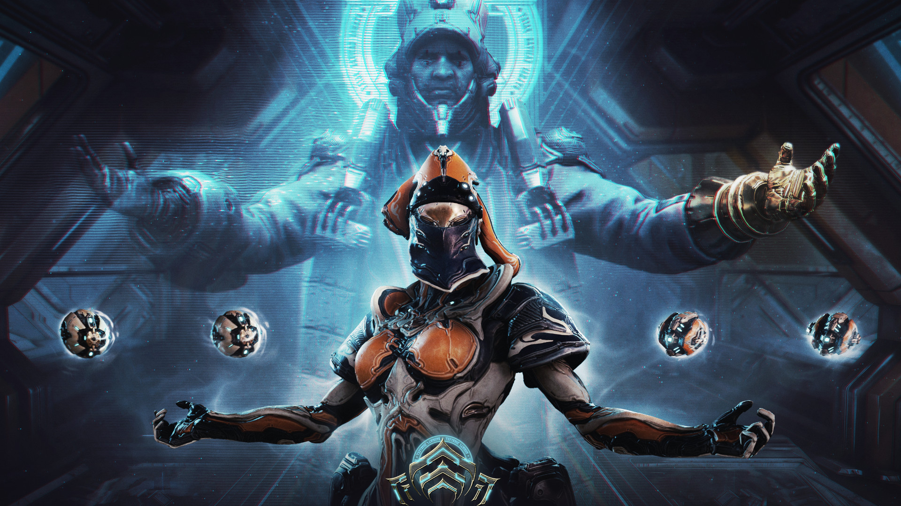

Here are some things I like to present!
Sennheiser HD600

Manufacturing started in 1997, this legendary model remains still one of the best headphones on the market, with extremely neutral sound and amazing accuracy!
Price:
299.99€
Pro-Ject Debut Recordmaster

Made by Pro-Ject, this turntable spins records at all 3 RPM speeds and comes with a decent cartridge also. Hence its name, it's capable of digitizing the music via playing on its own!
Price:
399.99€
Arrinera Hussarya

Made by a Polish car manufacturer, the Hussarya is a supercar that pays tribute to the Winged Hussars since the 17th century! It has over 650bhp, can drive over 320km/h and uses a V8 engine.
Price:
~199999.99€
Samsung Galaxy S10+
Released in 2019, this smartphone has one of the best looking displays on the market, with loud and crisp stereo speakers and a camera with 2x opt. zoom and has an ultra-wide angle lens. The display is 6.4", making it excellent for watching movies also!
Price:
128GB - 749.99€
Gigabyte Geforce RTX 2070 Windforce 8G

Nvidia's high-end RTX2070-2080Ti lineup comes RTX-enabled, with extremely good performance across the board. With 2304 CUDA cores and lightning-fast GDDR6 memory, this GPU is suitable for 4K gaming too!
Price:
449.99€
Clearscreen ICL 4000 spray

Weird that thing got in here, but listen! This spray is for the people who never clean the dust off their monitors, assuming they run their hands and face across it for come reason. Either way, I find it extremely useful, even for phones. You name them!
Price:
8.99€
Here are some games I like to review!
Terraria
"Dig, fight, explore, build! Nothing is impossible in this action-packed adventure game."
Released in May 16, 2011, this game revolves around taking place in a randomly generated 2D world where you build up your own base and... yourself, because you'll have to deal with various mobs compelled to ambush you with whatever you have. Traverse in 20+ biomes and discover lots of loots for the sake of upgrading your character!
Want to relax and have peaceful times in contrast to all the strenuous combatting? Prepare your fishing rods and bait and start fishing some treasure instead!
So for my opinion on the game, I would say it is an excellent time-waster! This is mostly due to how easily modifiable the game is, as it's a 32-bit 2D game. In a mod-DLC called TModLoader, there's even a dedicated mod browser which makes modding several times more convenient than modding Minecraft!
Even without the use of mods, it is still hours of fun, though if you've started getting bored after spending over 500 hours in the game I strongly recommend playing with mods; modding can make you play for at least 2000 more hours without getting bored!
So as a verdict, I would personally rate this game an 8,75/10. This game is not perfect by any means, but is extremely fun. Problems lie in terms of performance limitations because it doesn't take much advantage of high-end GPUs and CPUs, which could balance the framerate of the game in case of lag spikes and so forth.

Price: 9.99€
Available on:
Free To Play
Available on:
 

Warframe
"Warframe is a cooperative free-to-play third person online action game set in an evolving sci-fi world."
Venture through the entire solar system inside a high-tech, biomechanical body that is created for combat: a warframe. This space-ninja RPG looter-shooter action game has everything needed to be entertaining and engaging.
Being an online game, you have the advantageous option to team up with 3 other players to together share the looting and plundering without sacrificing anything.
If you hate having to spend money on a paid in-game currency, there's the strongly recommended option to participate in the Warframe Market, where hundreds and thousands of players sell and buy tradable goods such as Mods, which are meant to upgrade your gear, and many more things for something called platinum, in which you have 50 of when you start off with an account!
Don't worry about scammers, as when the player switches out a new item or makes any change in their trading item array, you'll have to press ready again.
So for my opinion, this game is just like Terraria, in the sense of having extremely compelling and fun gameplay for not just hardcore players, but casual players also. As with graphics, the game is very well-optimized, as 3840x2160 on my RTX 2070 GPU reaches a constant 60 FPS on ultra settings, not implying that it can run on a machintosh! If you're into realistic gameplay and doesn't like when the AI is stupid, you'll be slightly disappointed. If quality quests aren't of your utmost importance and rather great gameplay, then this is the game for you!
I would rate this game a modest 8,5/10.
Robocraft
"Build insane, fully customisable robot battle vehicles that drive, hover, walk and fly in the free-to-play action game Robocraft. Add weapons from the future and jump in the driving seat as you take your creation into battle against other players online!"
This descripion above says it all: you're in a giant garage where you can store your own unmanned robot vehicles.
Join in a lobby where you'll be taken to a battleground with many hills, hideouts, platforms and bridges etc. to traverse and plan your moves towards victory!
Enter the robot shop where you can look at thousands of creations made by other players and purchase them. Level up your weapons by using them and then upgrade for more damage.
For my opinion, I feel that the optimizations and graphics settings could be better, though it's not a game that is meant to have the most compelling graphics, but this game is amazing for its overall idea and concept. The quality of gameplay also makes up for that excellent idea. My personal favorite type of robot is a spider-legged sniper that uses helicopter rotors to fly, mostly because it's actually very efficient and super fun to play as.
Building the robots is convenient: you can mirror your build so whatever you build at one side will be replicated on the other side as if you were working on the robot from both sides simultaneously! This saves time and prevents asymmetry.
As a verdict, I will give lots of points for the gameplay and the entire concept itself, but a few points away for the sub-par graphics settings and optimizations. This game will have a 7,75/10.

Free To Play
Available on:
Price: 19.99€
Available on:

Rocket League
"Rocket League is a high-powered hybrid of arcade-style soccer and vehicular mayhem with easy-to-understand controls and fluid, physics-driven competition. Rocket League includes casual and competitive Online Matches, a fully-featured offline Season Mode, special “Mutators” that let you change the rules entirely, hockey and basketball-inspired Extra Modes, and more than 500 trillion possible cosmetic customization combinations."
High-powered might not be the best way to describe the game, but rather the fact that the gameplay is fast-paced, as you're literally driving a rocket-powered car through a large bouncy ball into an open goal. This is a driving force for some crazy gameplay that gets you compelled to even put your energy drinks aside.
What else is there to tell? There is an additional competitive gamemode called Dropshot, which is all about smashing the call against the floor of your opponent to damage it. Make sure the enemy doesn't touch the ball before it lands, because that would prevent damage from occuring. It is extremely fun to play.
Onto my personal opinions I find it a bit sad that it runs in 32-bit, and that the game feels a bit sluggish and slow in 4K resolution, from my experiences. Other than that, the game's physics open up to a big skill tree of moves and techniques to practice and apply to combat. It fuels up the competition and is a great game for E-sports. I am going to rate this game an overall 9,25/10, not making my personal problem a big deal as it doesn't really define how great the game is to play!